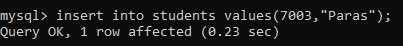
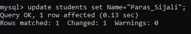
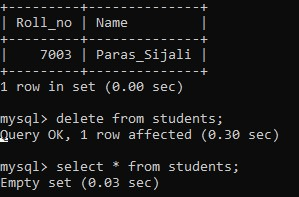

DDL ( DATA MANIPULATION LANGUAGE) COMMANDS
DML is an abbreviation of Data Manipulation Language.The DML commands in Structured Query Language change the data present in the SQL
database. We can easily access, store, modify, update and delete the existing records
from the database using DML commands.
1.To Insert values in a Table(INSERT)
SYNTAX = insert into tablename values(value1,value2);
Example = insert into students values(7003,"Paras");

2.To Update Data(UPDATE)
SYNTAX = update tablename set colname=value;
Example = update students set Name="Paras_Sijali";

3.To Delete Data from Table
SYNTAX = delete from tablename;
Example = delete from students;
